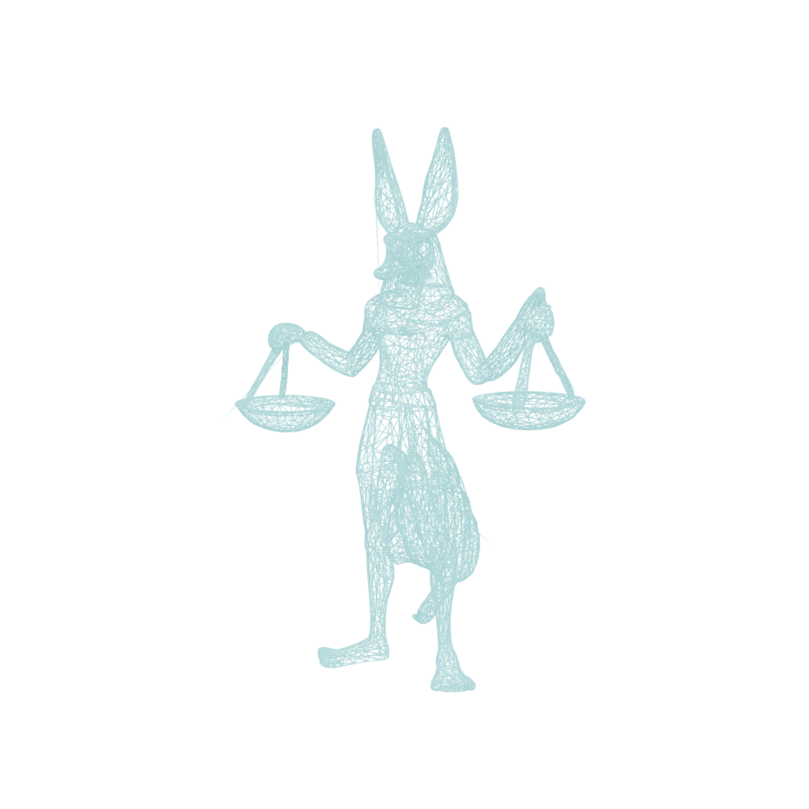

Bevy 0.19 headless REAL ENGINE
Blender EEVEE toon PROXY

Flat 3-band Shader-to-RGB diffuse + Freestyle silhouette/crease
outline + fresnel rim. Rendered --background. Kept as a faithful, clearly-labelled
reference for the target flat-cel look (harder ink lines than the engine's rim-based outline).
| Stage | Result |
|---|---|
| Tris before (TRELLIS) | 13,966 |
| Tris after retopo | 10,500 |
| Verts (welded) | 5,240 |
| UV atlas / PBR textures | preserved |
| Skeleton | 22 bones · Mixamo-compatible |
| Skinning | automatic (bone-heat) weights |
| Clips baked into 1 GLB | Idle (2s) · Walk (1s) |
| Export | +Y up · quaternion · no Draco |
| Step | Path | |
|---|---|---|
| Retopo | Blender decimate+clean, UV-preserve | ✓ worked |
| Rig | Scripted Blender humanoid + auto-weights | ✓ worked |
| Rig (fallback) | Mixamo/AccuRIG (not headless-scriptable) | skipped |
| Animation | Procedural keyed idle + walk | ✓ worked |
| Shader (primary) | Bevy 0.19 mtoon+outline, headless Metal | ✓ worked |
| Shader (fallback) | Blender EEVEE cel+Freestyle | ✓ also rendered |
Both render paths succeeded — the engine path is the hero; the EEVEE render is a labelled proxy/cross-check, not a substitute.
Honest read — does this clear a “stylized indie MOBA” bar?
Short answer: yes for silhouette, palette and readability; not yet for hand-authored polish. It’s a believable early-alpha champion, not a shipped League skin.
- Works: strong readable silhouette, on-model palette (navy skin, gold regalia, red kilt), real-time toon banding + rim/bloom that reads “stylized” at a glance, clean looping walk with visible stride, and a fully headless engine capture — the actual in-game bar, not a beauty render.
- Still off: the arms are locked in the A-pose holding the scales (props were never rigged as separate hand attachments), so arm swing is minimal and the scales float rigidly. The tail is a single blobby skinned mass with no secondary motion. Auto-weights pinch slightly at the hips/kilt. Retopo is decimated triangles, not artist quad-flow, so deformation at the knees is soft.
- Needs a human pass: face/jaw has no rig (no snarl/blink), fingers are a single hand bone, and the toon ramp is uniform — a real skin would get per-material shade tuning, a spec/hair highlight on the gold, and a proper outline width map. The engine outline currently reads more as a rim-light than an ink line.
Verdict for batching 47: the automated skeleton is production-viable for background/minion-tier units and greyboxing; hero champions still want ~1–2 hrs of manual rig cleanup + a quad retopo on the torso/legs. The headless engine-render harness is the real win — it gives an objective, repeatable visual gate per champion.
Concept ref & TRELLIS source untouched · all frames rendered headless
(blender --background --factory-startup · Bevy windowless Metal).